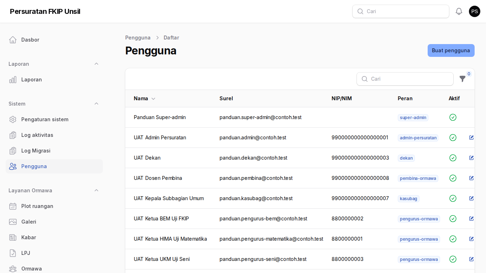
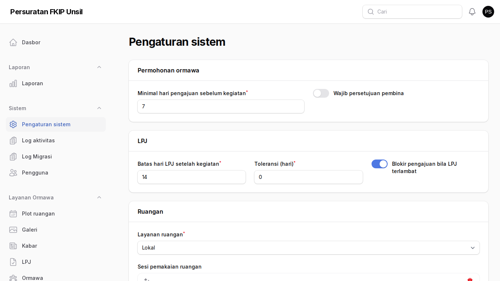
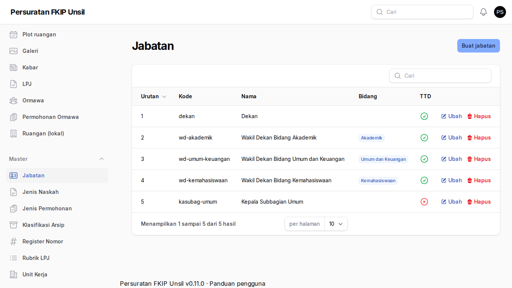
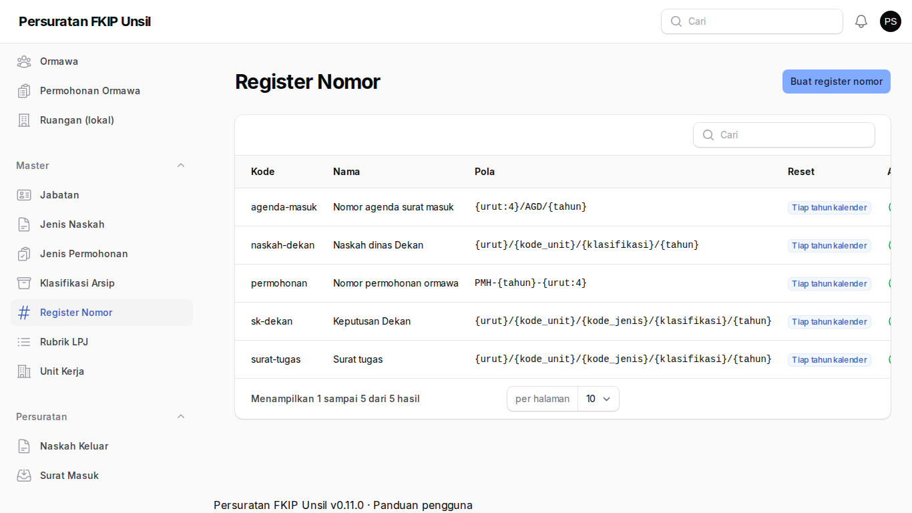
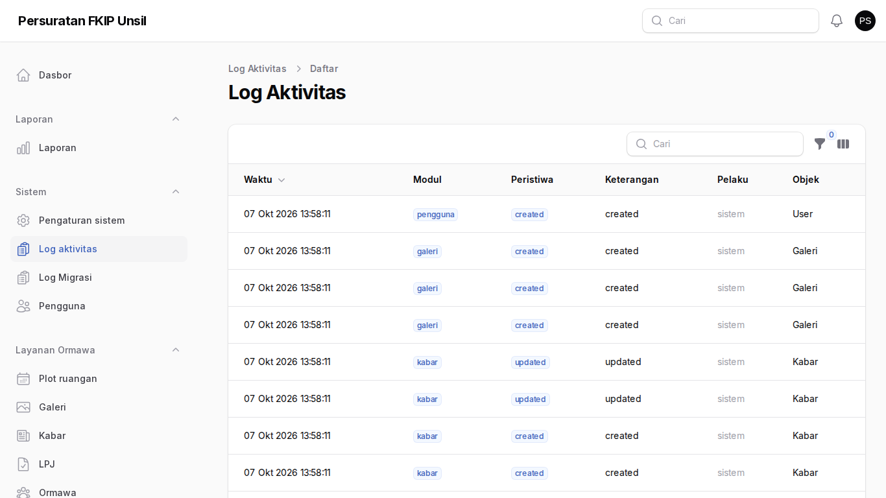
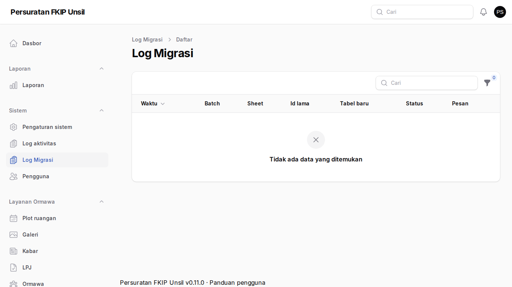

Super-admin
Tujuan
Mengelola pengguna, peran dan izin, pengaturan kebijakan, master data, audit, dan migrasi data.
Cara masuk
Akun pertama dibuat lewat perintah server php artisan surat:buat-superadmin (interaktif). MFA wajib saat masuk pertama.
Langkah-langkah
- Pengguna
Buat akun, tetapkan peran/izin, nonaktifkan, dan masuk sebagai pengguna lain (tercatat) untuk membantu.
Langkah 1 — Pengguna - Pengaturan sistem
Kebijakan fakultas: minimal hari pengajuan, batas LPJ dan blokir, sesi ruangan, kop surat, WhatsApp, pengingat.
Langkah 2 — Pengaturan sistem - Jabatan dan pemangku
Satu pemangku definitif per jabatan; Plt terpisah dengan masa jabatan.
Langkah 3 — Jabatan dan pemangku - Register nomor
Pola nomor naskah, agenda, dan permohonan; nomor yang dikeluarkan tidak dapat diubah.
Langkah 4 — Register nomor - Log aktivitas
Jejak audit semua perubahan (pelaku selalu pengguna terautentikasi).
Langkah 5 — Log aktivitas - Log migrasi
Hasil impor OrmawaHub per baris: ok, peringatan, lewati, galat.
Langkah 6 — Log migrasi
Tanya jawab
Kehilangan MFA.
Super-admin lain atau akses server dapat mengatur ulang rahasia MFA; simpan kode pemulihan.
Bagaimana mencadangkan?
Lihat docs/DEPLOY.md: cadangan harian dan uji pulih.